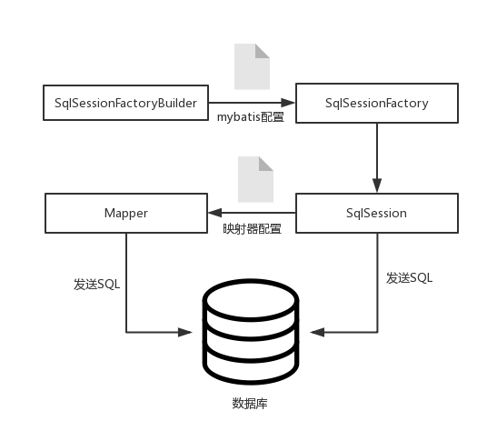
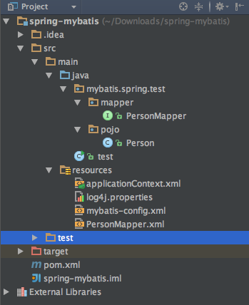
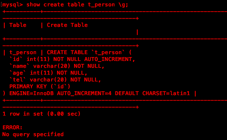
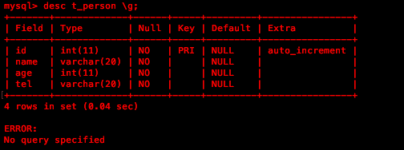

MyBatis简介
Mybatis与Hibernate都是持久层框架，这类框架的作用就是将数据库中的表和POJO映射起来，它们的本质就是Java对数据库的操作的抽象，所以我们也将这种框架称为对象关系映射框架(ORM,Object Relational Mapping)。它们的区别也很明显，Hibernate基本不需要编写SQL，它可以根据映射规则自动生成SQL语句，是一种全表映射。而MyBatis不屏蔽SQL，我们可以自己定制SQL，这样就提供给了我们足够的灵活性与优化的可能。总而言之，MyBatis相对于Hibernate来说具有性能高，响应快，开发灵活的特点。
MyBatis组件
MyBatis的核心组件分为4个部分：
- SqlSessionFactoryBuilder(构造器)：它会根据mybatis的配置文件(Configuration配置类)来生成SqlSessionFactory，这里采用的是分步构建的Builder模式
- SqlSessionFactory(工厂)：用于生成SqlSession，可以被认为是数据库连接池
- SqlSession(会话)：既可以直接发送SQL执行并返回结果，也可以获取映射器Mapper接口(动态代理的类)执行SQL得到返回结果，相当于数据库连接(Connection对象)
- Mapper(映射器)：由一个Java接口和XML文件构成：接口用于给出方法的入参以及返回值，XML给出SQL语句和映射规则。映射器的主要作用就是将SQL查询到的结果映射为一个POJO，或者将POJO的数据插入到数据库中
注意，无论是映射器还是SqlSession都可以发送SQL到数据库执行，但是为了保证代码的可读性与可维护性，推荐使用Mapper接口编程来完成该操作。
如何使用MyBatis
首先，在MyBatis中有两种XML配置文件，一种是基础配置文件，它只有一个，用于配置一些MyBatis的上下文参数和运行环境；另一种是映射器的XML映射文件，它可以配置映射关系，SQL等等。简单来说，在使用MyBatis的时候，先给出MyBatis的配置文件用于生成SqlSession，然后再给出映射器Mapper的接口与相应的映射XML文件，最后就可以生成Mapper接口的动态代理类来发送SQL获取结果了。

spring-mybatis
MyBatis框架上手很快，使用起来也很简单。MyBatis通常是在Spring容器中配置使用，Spring也对MyBatis提供了支持，接下来看一个在Spring中使用MyBatis的例子：
该项目使用maven构建，IDEA中的工程结构如图：

所有的xml配置文件都放置在main目录下的resources中，所有的java代码都在main目录下的java文件中。
在开发之前，需要做一些准备工作，在本地的mysql数据库中新建数据表t_person:

建完数据表之后数据表结构如图：

然后，我们需要在maven的pom文件中导入相关的依赖包，在搭建SpringMVC+Spring+MyBatis项目的时候，很多问题都出现在pom文件中的依赖中，要不是导入包少了，要不是导入的包与包之间版本问题，所以要多加小心：
|
|
在导入以上依赖之后，我们就可以进行开发了。首先要完成的就是mybatis的全局配置文件,在resources目录下的mybatis-config.xml文件:
|
|
我们只配置了mybatis的日志是使用log4j来完成，log4j的属性文件在resources目录下，我们可以自行修改log4j的日志级别，为了更加详细了解过程，这次使用了DEBUG级别输出到控制台，另外还配置了映射器的映射文件。
接下来就来完成映射器，映射器由接口与映射文件构成，先来看看PersonMapper接口：
|
|
@Param(“id”)注解用于将函数的入参传入SQL语句，后面的博客会详细介绍入参的绑定与结果的绑定。另外这里的Person类对应于我们事先定义于数据库中的t_person表：
|
|
根据映射器接口，再来完成映射文件，位于resources目录下的PersonMapper文件，这是mybatis允许我们自己写SQL与映射规则的地方：
|
|
mapper namespace表示的是该映射文件对应的接口的全限定包名，后面的SQL标签的id名对应与接口的方法名，注意不要弄错了。
MyBatis在默认情况下提供自动映射，只要SQL中的列名能和POJO对应起来即可。这里的列名name，age，tel，id与POJO中的属性名name，age，tel，id名字对应，所以在SELECT返回结果时Mybatis可以帮助我们完成自动映射。
至此，基本的构件就完成了。既然要在spring中配置mybatis，接下来就在spring容器中配置我们需要的组件，spring容器的配置文件是位于resources目录下的applicationContext.xml文件：
|
|
我们使用了spring提供的Mapper扫描工具类，可以将@Repository注解标注的接口动态代理为Mapper，所以我们需要在PersonMapper接口前标注@Repository，这样spring就会将该Mapper加入容器给我们使用。通过这种办法，spring将mybatis中的SqlSession从我们代码中擦除了，就可以直接面向Mapper接口编程。
现在开始测试：
|
|
通过mybatis向mysql数据库插入一条数据，控制台日志输出：
[QC] DEBUG [main] org.mybatis.spring.SqlSessionUtils.getSqlSession(97) | Creating a new SqlSession
[QC] DEBUG [main] org.mybatis.spring.transaction.SpringManagedTransaction.openConnection(87) | JDBC Connection [259564670, URL=jdbc:mysql://localhost:3306/test, UserName=root@localhost, MySQL Connector Java] will not be managed by Spring
[QC] DEBUG [main] org.apache.ibatis.logging.jdbc.BaseJdbcLogger.debug(159) | ==> Preparing: INSERT INTO t_person(name,age,tel) VALUES (?,?,?)
[QC] DEBUG [main] org.apache.ibatis.logging.jdbc.BaseJdbcLogger.debug(159) | ==> Parameters: qiu(String), 24(Integer), 13212778355(String)
[QC] DEBUG [main] org.apache.ibatis.logging.jdbc.BaseJdbcLogger.debug(159) | <== Updates: 1
[QC] DEBUG [main] org.mybatis.spring.SqlSessionUtils.closeSqlSession(191) | Closing non transactional SqlSession
[org.apache.ibatis.session.defaults.DefaultSqlSession@2a5c8d3f]
[QC] DEBUG [main] test.main(20) | 1
通过日志可以看到mybatis执行SQL的过程，我们也可以去mysql中查看结果，同样的方法可以测试其他方法。
总结
以上介绍了MyBatis的基本组件以及一个利用自动映射的且只涉及简单的增，删，改，查的实例，后续将会详细介绍MyBatis的映射器等其他内容，方便我们使用MyBatis完成更加复杂的业务需求。